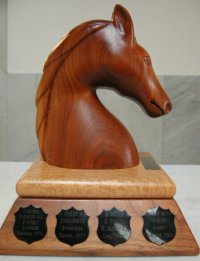

World Computer Chess Championship
Home * Tournaments and Matches * World Computer Chess Championship
{kind=link}
The World Computer Chess Championship (WCCC) is an annual event organized by the ICGA, where computer chess engines compete against each other.
Contents
History
The World Computer Chess Championship was created and organized by David Levy, Ben Mittman and Monroe Newborn in 1974, as suggested by the Soviet programmers of Kaissa [1] :
Since 1972 (1970 Editor) in the USA and Canada were hold the yearly championships of North America among the chess programs, organized by the ACM. The team of Kaissa directed the organizers of these tournaments to the thought to conduct a world championship, whose organization within the framework its regular congress took upon itself.
The WCCC and WCSC 2024 in Santiago de Compostela will be the last ones [2]:
* This will be the last WCCC. After 50 years, it's time to declare success. The WCCC started out with ELO 1600 programs and today we have ELO 3600 programs. It's time for a celebration... * The WCCC will include a special half-day event: Chess: History, Experiments, and Search Symposium (CHESS). We will invite to Spain as many of the early pioneers of computer chess, some of whom participated in Stockholm 1974! We will celebrate the past, present, and future of chess, computing, and AI.
ICCA
Since 1977 the WCCC was organized by the ICCA, which was founded 1977 in Toronto.
Shannon Trophy
The Champion is awarded by the Shannon Trophy [3] [4] .
|  | The Shannon Trophy |
Editions
Hardware Limit
In 2009, ICGA president David Levy surprised potential participants of the WCCC 2009 with an disputed short term decision, an 8-cores hardware limit [11] , a topic heavily discussed in various CC forums [12] . As a consequence, the ICGA initiated an opinion formation related to that issue with respect to future World Computer Chess Championships [13].
World Chess Software Championship
In September 2009, the ICGA announced following decision [14] : As a result of this input from the participants the ICGA has decided upon the following for the 2010 WCCC and subsequent years:
- The World Computer Chess Championship for the Shannon Trophy will be contested by teams who have no Restriction placed on them as to their choice of hardware.
- A new tournament will be introduced called the "World Chess Software Championship" to be held at the same location and during the same period as the WCCC. This will be a uniform platform event using computers loaned by the host organisation. In each game played in this tournament the two computers will be, so far as is possible, identical with respect to their hardware capabilities: number of cores, processor speed, memory size.
- Participants may compete in either or both of these tournaments for a single entry fee.
- The time control for the WCCC will be such as to aim for a 4-hour playing session, namely all moves in 1 hour 45 minutes plus an increment of 15 seconds per move.
- The time limit for the WCSC will be such as to aim for a 2-hour playing session, namely all moves in 45 minutes plus an increment of 15 seconds per move.
- The WCCC will be an 11-round Swiss System event if there are more than 12 entries, otherwise an all-play-all event.
- The number of rounds for the WCSC will be decided according to the number of entries in both events but there will be at least 9 rounds in the WCSC.
- There will as usual be a rest day for an excursion and time set aside for the speed championship.
David Levy President ICGA
Rybka Disqualification 2011
In June 2011, the ICGA has disqualified and banned Rybka and its programmer Vasik Rajlich from previous and future World Computer Chess Championships. The ICGA accuses Rajlich of plagiarizing two other programs, Crafty and Fruit, and demands that he returns the trophies and prize money of the World Computer Chess Championships in 2007, 2008, 2009 and 2010 [15], see ICGA Investigations.
A New Format 2017
On June 07, 2017, a few weeks before the upcoming WCCC 2017 in Leiden, ICGA president David Levy announced a new format (excerpt) [16][17] [18]: Starting in 2018 the World Computer Chess Championship will be played as a match, between the reigning World Champion and a challenger chosen by a process which will be discussed amongst the ICGA Board and participants from recent years’ championships. That discussion will commence very soon after this year’s World Championship, which is taking place in Leiden from July 3rd-7th. This new format is akin to the FIDE World Championship (for human Chess players).
For the 2017 World Computer Chess Championship we are changing the format, removing the entry fee, and offering an expenses budget to each of the contestants. Our aim for 2017 will be to attract the strongest participants. There will be only 4 contestants, each of whom will receive 1,000 Euro for their expenses from the ICGA. The Komodo team have already indicated their acceptance, and we very much hope that some of the former World Champions and other leading programs will now find the event attractive and apply to participate.
See also
- Computer Olympiad
- History of Computer Chess
- ICGA
- ICGA Investigations
- World Chess Software Championship
- World Microcomputer Chess Championship
Publications
- Monty Newborn (2011). Beyond Deep Blue: Chess in the Stratosphere. Springer, ISBN-13: 978-0857293404, amazon
- The Board of ICGA (2013). Rules for the 20th World Computer-Chess Championship. ICGA Journal, Vol. 36, No. 1, pdf
- Monty Newborn (2020). An analysis of games played in world computer chess championships over the years. ICGA Journal, Vol. 42, Nos. 2-3
Postings
2008
- Authors lend me your ear - Why aren't you entering? by Charles Roberson, CCC, June 27, 2008
2010 ...
- World Computer Chess Championship ? by Marco Costalba, CCC, June 09, 2012
- ICGA Olympiad 2013: Yokohama, Aug 12-18! by Harm Geert Muller, CCC, December 21, 2012 [19]
- ICGA Computer Olympiad 2013: Yokohama, Aug 12-18 by Harm Geert Muller, Rybka Forum, December 21, 2012
- Why don't strong engines enter WCCC? by Syed Fahad, CCC, July 31, 2014
2015 ...
- WCCC 2015 Leiden by Stefano Gemma, CCC, January 14, 2015
- ICGA's 2015 World Computer Chess Championship/Events by Mark Lefler, CCC, February 19, 2015
- World Computer Chess Championship 2015 by Harvey Williamson, Hiarcs Forum, May 07, 2015
- WCCC June 27th in Leiden by Harvey Williamson, CCC, June 11, 2016
- 2017 Events in Leiden by Jan Krabbenbos, ICGA, April 22, 2017
- Important announcement: World Computer Chess Championship by Mark Lefler, CCC, June 07, 2017
- Important announcement: World Computer Chess Championship – A New Format by Mark Lefler on behalf of David Levy, ICGA, June 07, 2017
- World Computer Chess Championships 2018 by Mark Lefler on behalf of David Levy, ICGA, February 12, 2018
- World Computer Chess Championship by Mark Lefler, CCC, February 19, 2018
- World Computer Chess Championships 2018 – Tournament schedule by Mark Lefler on behalf of David Levy, ICGA, February 25, 2018
- Chess Champion Ship in Macau without Hiarcs ? by LoveChessAH, HIARCS Forum, July 21, 2019
2020 ...
- 2020 ICGA Events by Mark Lefler on behalf of Jonathan Schaeffer, CCC, January 15, 2020
- ICGA 2022 by Eduard Nemeth, CCC, July 24, 2022
- ICGA 2023 by Peter Skinner, CCC, July 08, 2023
- ICGA WCCC and WCSC in Santiago de Compostela CCC, March 06, 2024
External Links
- World Computer Chess Championship - ICGA Tournament Site
- Important games hosted by Ed Schröder
- Yokohama 2013 (ICGA Tournaments) [20]
- World Computer Chess Championship from Wikipedia
- World Computer Chess Championship by Mark Weeks
- WCCC from Schachcomputer.info - Wiki (German)
References
- ↑ История “Каиссы” Михаил Донской History of Kaissa by Mikhail Donskoy, (Russian), from Russian Virtual Computer Museum
- ↑ ICGA WCCC and WCSC in Santiago de Compostela CCC, March 06, 2024
- ↑ The Shannon Trophy Photo from ChessBase.com
- ↑ The Shannon Trophy Photo from the CSVN Site
- ↑ Ban on Deep Junior from Combinatorics and more - Gil Kalai’s blog
- ↑ After the disqualification of Rybka in June 2011, Zappa is World Computer Chess Champion 2007
- ↑ After the disqualification of Rybka in June 2011, HIARCS is World Computer Chess Champion 2008
- ↑ After the disqualification of Rybka in June 2011, Junior, Shredder and Deep Sjeng are World Computer Chess Champions 2009
- ↑ After the disqualification of Rybka in June 2011, Rondo and Thinker are World Computer Chess Champions 2010
- ↑ WCCC Rules Amsterdam, The Netherlands, June 11-18, 2007, The Board of the ICGA
- ↑ Clarification of the 8-cores rule for the WCCC (updated)
- ↑ Hardware limits in the WCCC from The ICGA Forum
- ↑ Future World Computer Chess Championships by Harvey Williamson, Hiarcs Chess Forum, June 12, 2009
- ↑ WCCC 2010 by Harvey Williamson, Hiarcs Forum, September 28, 2009
- ↑ Rybka disqualified and banned from World Computer Chess Championships | ChessVibes by Peter Doggers, June 29, 2011 (Wayback Machine)
- ↑ Important announcement: World Computer Chess Championship by Mark Lefler, CCC, June 07, 2017
- ↑ Important announcement: World Computer Chess Championship – A New Format by Mark Lefler on behalf of David Levy, ICGA, June 07, 2017
- ↑ Fifteenth International Conference on Advances in Computer Games 2017
- ↑ 2013 (ICGA Tournaments)
- ↑ ICGA Olympiad 2013: Yokohama, Aug 12-18! by Harm Geert Muller, CCC, December 21, 2012